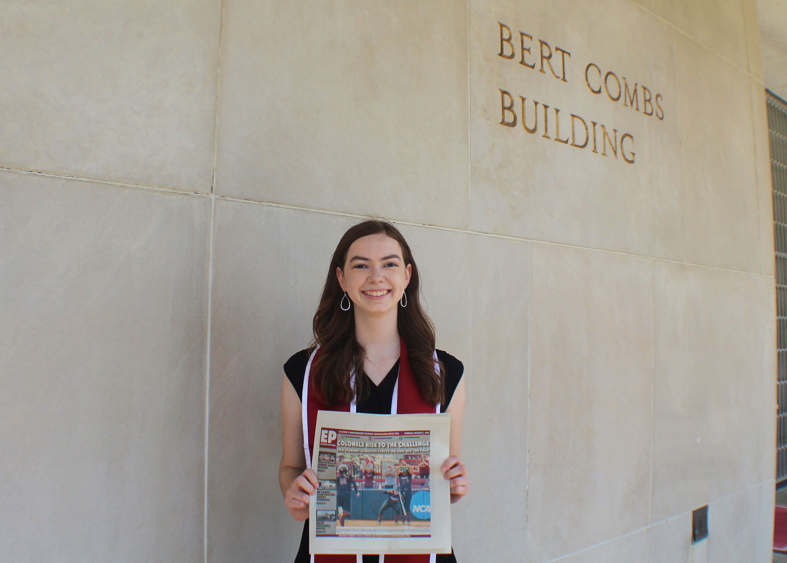

I graduated summa cum laude with a degree in broadcasting and electronic media (mulitmedia journalism concentration) and a sports communication certificate from Eastern Kentucky University in 2022.
Currently, I am the sports editor for the Henry County Local, a weekly newspaper in Henry County, Ky. Previously, I worked as the sports editor for the Eastern Progress, EKU’s student publication, and the Georgetown News-Graphic as a general assignment reporter intern.
My lifelong love for sports and passion for writing and photography led me to my career today. I enjoy capturing moments in sports history and telling unique stories through written and visual media.
